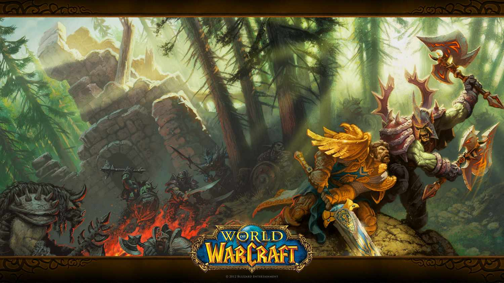
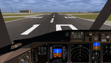

Vedio Game Genres
1) Massively multiplayer online role-playing game
A massively multiplayer online role-playing game is a video game that combines aspects of a role-playing video game and a massively multiplayer online game. As in role-playing games, the player assumes the role of a character and takes control over many of that character's actions.As in role-playing games (RPGs), the player assumes the role of a character (often in a fantasy world or science-fiction world) and takes control over many of that character's actions. MMORPGs are distinguished from single-player or small multi-player online RPGs by the number of players able to interact together, and by the game's persistent world (usually hosted by the game's publisher), which continues to exist and evolve while the player is offline and away from the game.
2) RPG or Role Playing Game

A role-playing game (sometimes spelled roleplaying game,[1][2] or abbreviated as RPG) is a game in which players assume the roles of characters in a fictional setting. Players take responsibility for acting out these roles within a narrative, either through literal acting or through a process of structured decision-making regarding character development.[3] Actions taken within many games succeed or fail according to a formal system of rules and guidelines.[4] There are several forms of role-playing games. The original form, sometimes called the tabletop role-playing game (TRPG or TTRPG), is conducted through discussion, whereas in live action role-playing (LARP), players physically perform their characters' actions.[5] Both forms feature collaborative storytelling. In both TTRPGs and LARPs, often an arranger called a game master (GM) decides on the game system and setting to be used, while acting as a facilitator or referee. Each of the other players takes on the role of a single character in the fiction.[6] Several varieties of RPG also exist in electronic media, such as multiplayer text-based Multi-User Dungeons (MUDs) and their graphics-based successors, massively multiplayer online role-playing games (MMORPGs). Role-playing games also include single-player role-playing video games in which players control a character, or team of characters, who undertake(s) quests. Role-playing video games may include player capabilities that advance over time using statistical mechanics. These electronic games sometimes share settings and rules with tabletop RPGs, but emphasize character advancement more than collaborative storytelling.[7][8]
3) Simulation vedio game
Simulation video games are a diverse super-category of video games, generally designed to closely simulate real world activities.[1] A simulation game attempts to copy various activities from real life in the form of a game for various purposes such as training, analysis, prediction, or entertainment. Usually there are no strictly defined goals in the game, and the player is allowed to control a character or environment freely.[2] Well-known examples are war games, business games, and role play simulation. From three basic types of strategic, planning, and learning exercises: games, simulations, and case studies, a number of hybrids may be considered, including simulation games that are used as case studies.[3] Comparisons of the merits of simulation games versus other teaching techniques have been carried out by many researchers and a number of comprehensive reviews have been published.[4]